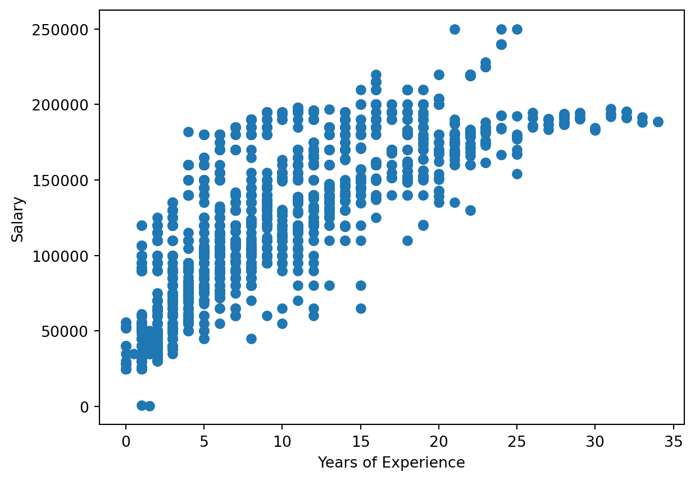
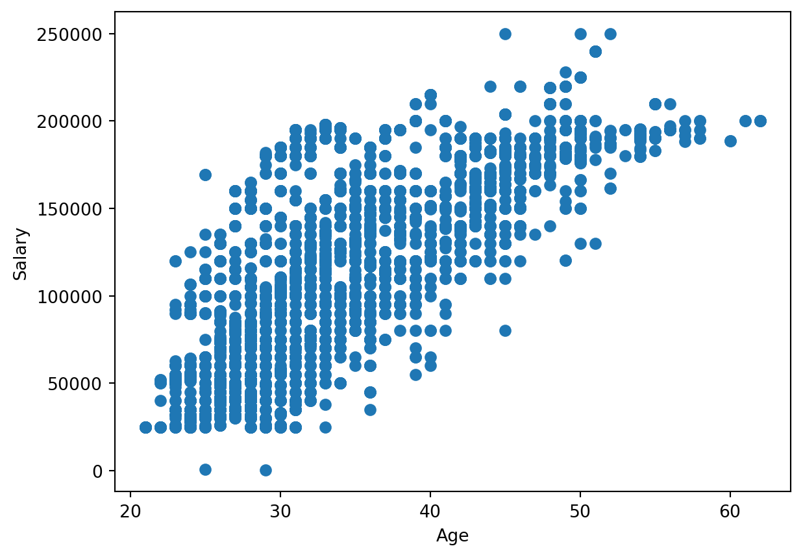

This blog post will compare a multilinear regression model to a random forest regression model to predict the salary of an individual based on years of experience and age. This model will create a train test split similar to what was done in the classification model blog post.
Data
import pandas as pdsalary = pd.read_csv('../../data/Salary.csv')salary.info()
The dependent/predicted variable is salary. The independent variables for the regression model is years of experience and age.
from sklearn.model_selection import train_test_splittrain_set, test_set = train_test_split(salary, test_size=0.2, random_state =35)
Training Set
X_train = train_set[['Years of Experience', 'Age']]y_train = train_set['Salary']
Test variables
X_test = test_set[['Years of Experience', 'Age']]y_test = test_set['Salary']
Visualizations
Scatter plot of the independent variables (Years of Experience and Age) against the dependent variable salary.
import matplotlib.pyplot as pltX1 = X_train['Years of Experience']X2 = X_train['Age']plt.scatter(X1, y_train)plt.xlabel('Years of Experience')plt.ylabel('Salary')plt.show()plt.scatter(X2, y_train)plt.xlabel('Age')plt.ylabel('Salary')plt.show()


Linear regression
from sklearn.linear_model import LinearRegressionlin_reg = LinearRegression()lin_reg.fit(X_train, y_train)salary_predictions = lin_reg.predict(X_train)salary_predictions
Walk through example decision tree with observation
X_train.iloc[0], y_train.iloc[0]
(Years of Experience 13.0
Age 42.0
Name: 950, dtype: float64,
197000.0)
In the example the root starts with Year of Expereince <= 5.5, so we would follow the False response down the right side of the tree. The next level looks at Year of Expereince <= 10.5, again we would follow the False response down the right side of the tree. Finally, the tree checks Year of Expereince <= 15.5 to which we would respond True and the salary for Age 42 with 13 years of experience is predicted to be $157,427.60. The actual salary is $197,000.00.
Evaluate Test set
The random forest model does a better job at predicting salay of an individual with a root mean square error of $20,080. So we will evalute the test set with the random forest model.